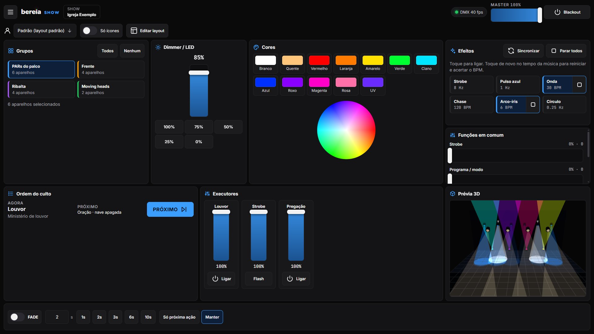
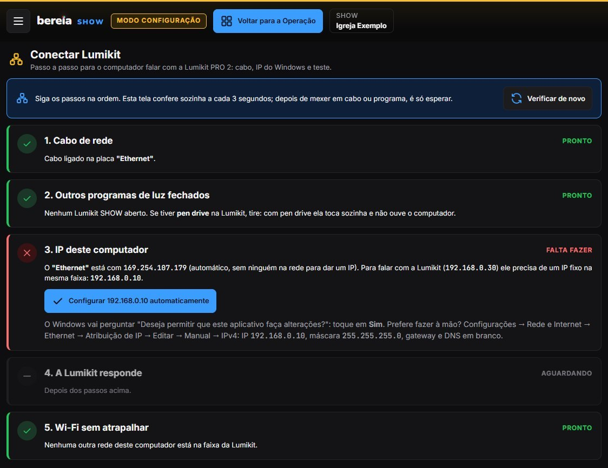

A iluminação da igreja na ponta do dedo
Cores, intensidade, efeitos e a ordem do culto numa tela touch, ligada à Lumikit PRO 2. Funciona sem internet.

Como instalar
Três passos. Na primeira vez leva uns 5 minutos.
Baixe
Toque em Baixar para Windows. O arquivo BereiaShow-Setup vai para a pasta Downloads.
Instale
Dê duplo clique no arquivo e siga o instalador. Ele já coloca tudo o que o programa precisa.
Conecte a Lumikit
Ligue o cabo de rede do notebook na Lumikit, abra o BereiaShow e toque em menu ☰ → Conectar Lumikit. O assistente confere tudo e configura o computador com um toque.
Pronto para o culto
Pensado para quem opera a luz ao vivo, sem precisar entender de DMX.
- A luz não para: se a tela travar, a luz continua e o programa se recupera sozinho.
- Ordem do culto: cada momento com a sua luz, e o botão PRÓXIMO avança.
- Efeitos no tempo da música: strobe, pulso, onda e chase sincronizados entre aparelhos diferentes.
- Cadastro fácil: diga "tenho 8 PARs iguais" e o programa dá o endereço DMX de cada um.
- Nada se perde: salva sozinho, com backups e recuperação se o computador desligar de repente.

Novidades
O que mudou na versão mais nova. Para atualizar, baixe e instale por cima: seus shows e configurações continuam.
Versão mais nova
O que você precisa
Notebook com Windows ou Mac
Windows 10 ou 11 (64 bits) ou macOS 12 ou mais novo. Uma tela touch deixa tudo mais fácil, mas não é obrigatória.
Lumikit PRO 2
Ligada ao notebook por cabo de rede. Duas saídas DMX, com até 512 canais cada.
Sem internet
A internet só é usada para baixar. No culto, tudo roda no próprio computador.